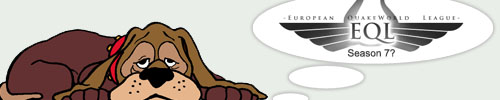

EQL to torture us once again?

A secret source has revealed to us that the European Quake League might be planning to launch a new season. Most of us probably don’t have good memories of the last season of EQL as the whole season and playoffs were quite poorly organised; not to mention the league coverage. However, it seems that new breezes are blowing in the crew as the crew is no longer dictated by Sassa, who has apparently stepped down from the Head admin position just to help when needed.
European Quake League is known to be just a 4on4 league, but if the rumours turn into facts then there might be the possibility of a 2on2 league to be held along with the regular 4on4 league. The history of QuakeWorld 2on2 leagues is not a pretty thing to look at though: Most of the leagues have died and ended in one way or another. Most recently NNQL made a fine example of how a league is not meant to be run, as both of the seasons turned to be total disasters.
The starting date of the new season remains a mystery, but now that Sassa is not in the lead, the crew might be smart enough to not start the season in middle of the NQR playoffs. However, if you take a look at your calendar, you should realise that the summer is right around the corner and summer is obviously the worst time to run competitions that involve QuakeWorld. But is the crew’s new blood patient enough to wait all summer long until fall to start the new season? That is left to be seen.
Last EQL really did have quite a few issues indeed. But with Itsinen taking control now I'm pretty confident that whatever they come up with is going to blow last EQL out of scale. Good luck from my side anyway!